EMBALSE DE ASHINA
Aquí empieza la aventura de Sekiro. El Embalse de Ashina es uno de los primeros escenarios que conoce el jugador y representa el lugar donde comienza la historia del Lobo, un shinobi que ha dedicado su vida a proteger al Descendiente Celestial, Kuro. La zona se caracteriza por sus construcciones deterioradas, sus caminos estrechos y sus alrededores silenciosos, que transmiten una sensación de abandono y peligro [2][6].
En este lugar se presenta la situación inicial del protagonista y se establece el vínculo que mantiene con su joven amo. También permite conocer las primeras mecánicas de exploración, sigilo y combate. Aunque parece una región pequeña, su importancia narrativa es fundamental, ya que aquí comienza el viaje que llevará a Sekiro a enfrentarse a los conflictos que amenazan las tierras de Ashina [2][6].
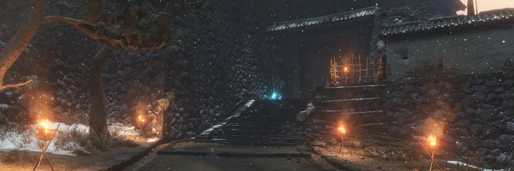
ALREDEDORES DE ASHINA
Los alrededores de Ashina conforman una extensa zona de caminos, pendientes, puentes y fortificaciones que conducen hacia el castillo. Durante su recorrido, Sekiro debe atravesar territorios vigilados por soldados y otros enemigos que protegen las posiciones militares del clan Ashina. El entorno combina construcciones tradicionales japonesas con paisajes naturales, como montañas, bosques y barrancos [2][7].
Esta región es importante porque permite comprender la situación militar del territorio y la resistencia que enfrenta el protagonista durante su búsqueda. Sus diferentes rutas ofrecen oportunidades para utilizar el sigilo, explorar caminos alternativos y descubrir objetos útiles. A medida que Sekiro avanza, el jugador encuentra nuevos obstáculos que exigen aprovechar sus habilidades de combate y movilidad para continuar hacia el castillo [2][7].
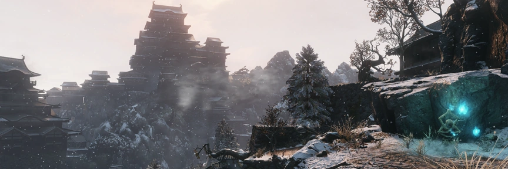
HACIENDA HIRATA
La Hacienda Hirata es una región que Sekiro visita mediante un recuerdo de acontecimientos ocurridos años antes de la historia principal. Se trata de una propiedad tradicional japonesa rodeada de bosques, jardines, caminos y construcciones de madera. A pesar de su apariencia tranquila y elegante, el lugar se encuentra envuelto en un conflicto que ha provocado la destrucción de sus instalaciones y ha puesto en peligro a sus habitantes [2][8].
Este escenario tiene una importancia especial porque permite conocer más sobre el pasado de Sekiro y su relación con el Descendiente Celestial. Durante la exploración, el protagonista se enfrenta a numerosos enemigos que han invadido la hacienda, mientras intenta descubrir qué ocurrió realmente durante aquellos acontecimientos. Su ambientación contrasta la belleza de sus jardines con la violencia que domina el lugar [2][8].
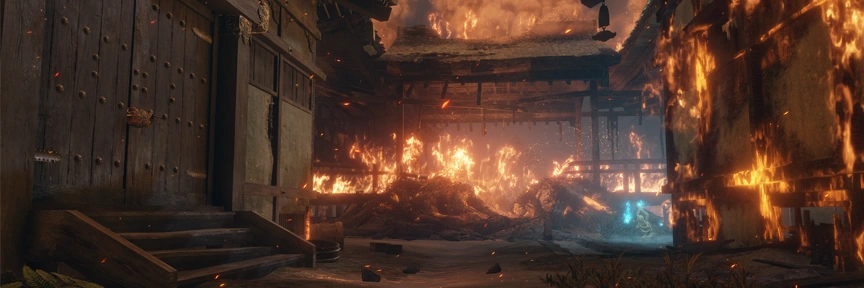
CASTILLO DE ASHINA
El Castillo de Ashina es una de las construcciones más importantes del juego y representa el centro del poder militar del clan Ashina. Se encuentra situado en una posición elevada, rodeado de fortificaciones, murallas y diferentes estructuras defensivas. Desde sus tejados y torres se puede contemplar gran parte del territorio, lo que demuestra su importancia estratégica para la protección de la región [2][9].
Nuestro protagonista busca rescatar a su joven amo, Kuro, quien se encuentra relacionado con los planes de los dirigentes de Ashina debido a su sangre especial. Para avanzar, Sekiro debe superar las defensas del castillo y enfrentarse a guerreros experimentados. El escenario también destaca por sus diferentes niveles de exploración, ya que es posible desplazarse por tejados, patios y pasadizos. Su diseño convierte esta zona en uno de los principales desafíos de la aventura [2][9].
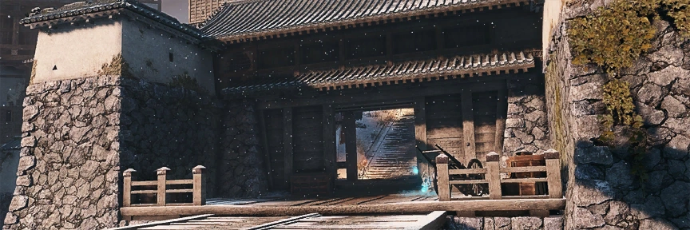
MAZMORRA ABANDONADA
La Mazmorra Abandonada es un lugar oscuro y subterráneo que contrasta con los paisajes abiertos y las construcciones tradicionales de otras regiones. Sus pasillos estrechos, habitaciones deterioradas y espacios poco iluminados transmiten una sensación de encierro e inquietud. El escenario está relacionado con prácticas experimentales que buscan comprender y aprovechar determinados fenómenos vinculados con la inmortalidad [2][10].
Es la hora de buscar un lugar desde el que continuar. Durante su recorrido, Sekiro descubre que la mazmorra esconde actividades inquietantes y personajes relacionados con los experimentos realizados en Ashina. Su exploración permite conocer una faceta más oscura del conflicto que atraviesa la región. Además, funciona como un punto de conexión entre diferentes zonas, por lo que resulta importante para comprender la distribución del mundo del juego [2][10].
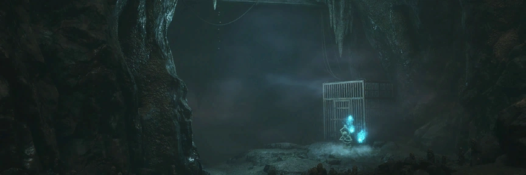
TEMPLO SENPO
El Templo Senpo es una región montañosa en la que se encuentran monasterios, edificios religiosos, puentes y caminos rodeados de vegetación. Su arquitectura y su ubicación elevada transmiten una apariencia espiritual y apartada del resto del territorio. Sin embargo, detrás de su ambiente religioso se esconden acontecimientos relacionados con la búsqueda de la inmortalidad y con los experimentos realizados por los monjes que habitan el luga [2][11].
Sekiro busca algo que le dé más poder y llega hasta esta región con el propósito de encontrar respuestas relacionadas con la inmortalidad. Durante la exploración debe atravesar templos, patios y senderos protegidos por enemigos que utilizan diferentes estilos de combate. El lugar resulta especialmente interesante porque muestra cómo la búsqueda de un poder extraordinario puede transformar incluso a una comunidad dedicada originalmente a la vida religiosa [2][11].
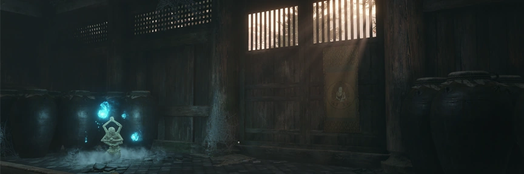
VALLE SUMERGIDO
El Valle Sumergido es una región natural caracterizada por sus enormes acantilados, caminos estrechos y profundas caídas que convierten la exploración en una actividad peligrosa. Gran parte de sus recorridos se desarrolla entre montañas y formaciones rocosas, donde el jugador debe prestar atención a los movimientos de los enemigos y a los peligros del entorno. La escala de sus paisajes transmite una sensación de aislamiento y dificultad [2][12].
Siguiendo los consejos de un aliado, Sekiro se dirige a un lejano valle. En esta región encuentra posiciones defendidas por combatientes armados con rifles y otros peligros que obligan a utilizar cuidadosamente el gancho y las técnicas de sigilo. El escenario también destaca por sus rutas verticales, ya que el protagonista debe desplazarse entre plataformas y salientes para superar los obstáculos. Su exploración conduce a zonas cada vez más profundas y relacionadas con los misterios de Ashina [2][12].
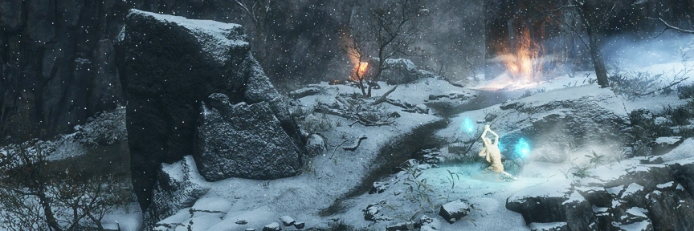
PROFUNDIDADES DE ASHINA
Las Profundidades de Ashina forman una región subterránea y misteriosa situada lejos de las principales fortificaciones del clan. Sus caminos atraviesan cavernas, bosques oscuros, pantanos y zonas cubiertas por una vegetación abundante. La escasa iluminación y la presencia de peligros ocultos hacen que el recorrido tenga una atmósfera inquietante, muy diferente a la de los escenarios más abiertos del juego [2][13].
Existe un camino aún más profundo que el valle que podría esconder el lugar que estamos buscando. A medida que avanza, Sekiro descubre que esta región está relacionada con sucesos sobrenaturales y con la búsqueda de la inmortalidad. Sus habitantes y enemigos reflejan las consecuencias de prácticas extrañas que han alterado la vida de quienes permanecen allí. Es uno de los escenarios que mejor representa el lado oscuro y misterioso del mundo de Sekiro [2][13].
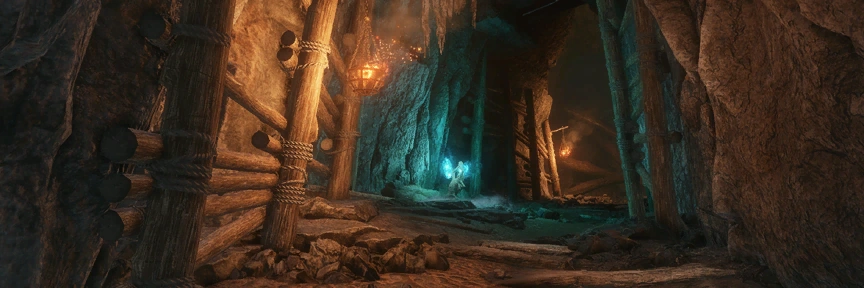
ALDEA MIBU
La Aldea Mibu es un asentamiento escondido entre las Profundidades de Ashina. Sus viviendas, caminos estrechos y zonas pantanosas están rodeados de árboles y vegetación, creando un ambiente que parece detenido en el tiempo. A primera vista podría parecer una comunidad tranquila y alejada de los conflictos militares, pero sus habitantes muestran comportamientos extraños que revelan que algo no está bien [2][14].
Los creyentes de un extraño dios no parecen haber salido bien parados. La aldea está vinculada con prácticas y creencias relacionadas con la inmortalidad, cuyos efectos han transformado profundamente a sus habitantes. Mientras explora el lugar, Sekiro debe enfrentarse a enemigos particulares y descubrir los secretos que se esconden detrás de sus costumbres. Su ambientación destaca por la combinación de belleza natural, aislamiento y elementos sobrenaturales [2][14].
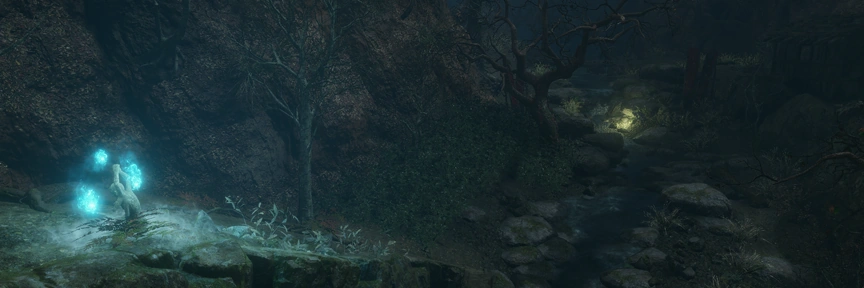
RETORNO AL CASTILLO ASHINA
El regreso al Castillo de Ashina presenta una situación muy diferente a la que Sekiro encontró durante su primera visita. Las circunstancias han cambiado y el territorio se encuentra afectado por nuevos acontecimientos que modifican la organización de sus defensas. Los caminos, patios y estructuras que antes estaban bajo el control de los defensores de Ashina adquieren una nueva importancia dentro del desarrollo de la aventura [2][15].
Algo sucede en el Castillo... Sekiro debe apresurarse para solucionar el problema. Esta parte de la historia representa un momento decisivo, porque el protagonista debe regresar a un lugar que ya conoce, pero que ahora presenta nuevos desafíos. La distribución de los enemigos y los enfrentamientos cambian, obligando al jugador a adaptar sus estrategias. El castillo vuelve a convertirse en un escenario central para los acontecimientos que determinarán el destino de Ashina [2][15].
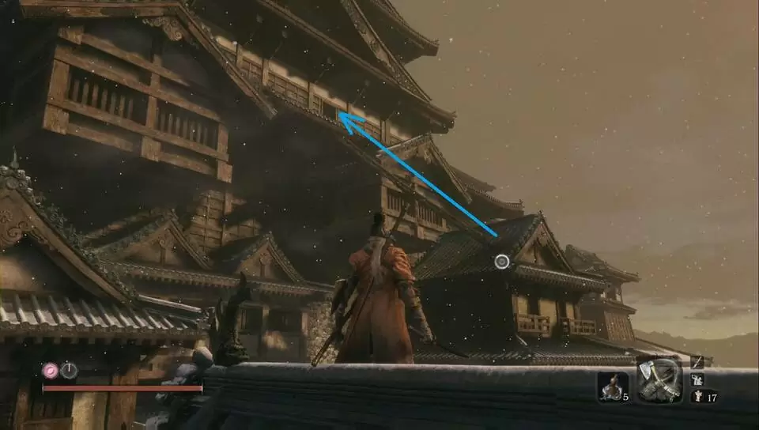
PALACIO DEL MANANTIAL
El Palacio del Manantial es uno de los escenarios visualmente más llamativos de Sekiro. Su entorno está formado por grandes construcciones tradicionales, jardines, lagos, cascadas y árboles que destacan por sus colores intensos. La arquitectura del palacio y la abundancia de agua crean una atmósfera elegante y misteriosa, que contrasta con las regiones oscuras y deterioradas que el protagonista ha recorrido anteriormente [2][16].
Un mágico y extraño viaje nos lleva a un lugar aún más extraño. Esta región está relacionada con el origen de determinados fenómenos de inmortalidad y con la presencia de seres que poseen características sobrenaturales. Aunque su apariencia transmite tranquilidad y belleza, el palacio esconde peligros que ponen a prueba las habilidades del jugador. Su exploración permite descubrir elementos fundamentales para comprender los misterios que rodean al Descendiente Celestial y el destino de Ashina [2][16].
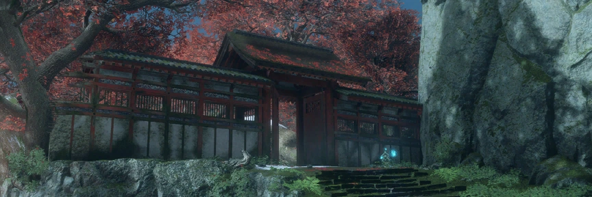
REINO DIVINO
El Reino Divino representa un espacio sobrenatural vinculado con los orígenes de la inmortalidad y con el poder que procede del Dragón Divino. Su presencia está relacionada con los acontecimientos que se desarrollan en el Palacio del Manantial. A diferencia de las regiones militares y los asentamientos humanos, este lugar transmite una sensación de irrealidad y de conexión con fuerzas que superan la comprensión de los habitantes de Ashina [2][17].
Aquí estará el último ingrediente que necesitamos. El viaje hacia este reino constituye una parte importante de la búsqueda de Sekiro, ya que permite acercarse al origen de los elementos necesarios para cumplir su objetivo. Su ambientación destaca por los elementos sobrenaturales y por la presencia de una naturaleza que parece tener un carácter sagrado. Este lugar representa uno de los puntos más importantes de la aventura, tanto por su significado narrativo como por los desafíos que plantea al jugador [2][17].
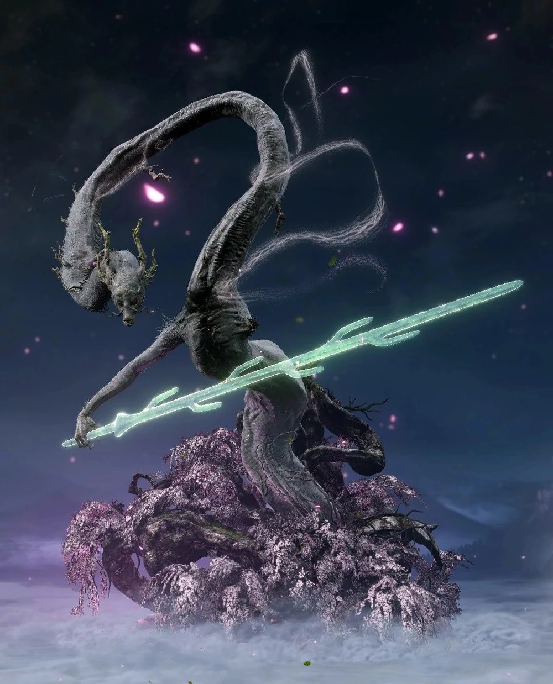
CASTILLO DE ASHINA (GUERRA)
El Castillo de Ashina durante la guerra muestra una transformación profunda del escenario que el jugador ya conoce. La fortaleza, que anteriormente representaba el centro del poder militar de Ashina, ahora refleja las consecuencias de un conflicto que amenaza con terminar con su dominio. Las estructuras defensivas, los caminos y los alrededores adquieren una apariencia más caótica, mientras los enfrentamientos se intensifican en toda la zona [2][18].
El fin de un reinado ha comenzado... La situación obliga a Sekiro a regresar al castillo en medio de acontecimientos decisivos. El escenario representa el debilitamiento de las fuerzas que anteriormente protegían la región y muestra cómo el conflicto ha alcanzado su momento más crítico. Para el jugador, esta versión del castillo supone un desafío diferente, porque debe enfrentarse a nuevos peligros en un entorno que ha perdido gran parte de su antigua estabilidad [2][18].

ALREDEDORES DE ASHINA (GUERRA)
Los alrededores de Ashina durante la guerra presentan un panorama de destrucción y peligro. Los caminos que anteriormente permitían explorar los bosques y las fortificaciones ahora reflejan las consecuencias de los enfrentamientos. El entorno se vuelve más hostil y transmite la sensación de que el conflicto ha alcanzado incluso las regiones alejadas del centro del poder milita [2][19].
Una extraña criatura ha devastado toda la zona alrededor del Templo Desolado. La presencia de nuevos peligros modifica el recorrido habitual y obliga a Sekiro a enfrentarse a amenazas que no estaban presentes durante su primera visita. Esta transformación permite apreciar cómo los acontecimientos de la historia afectan al mundo del juego y cómo las consecuencias del conflicto se extienden por todo el territorio de Ashina [2][19].
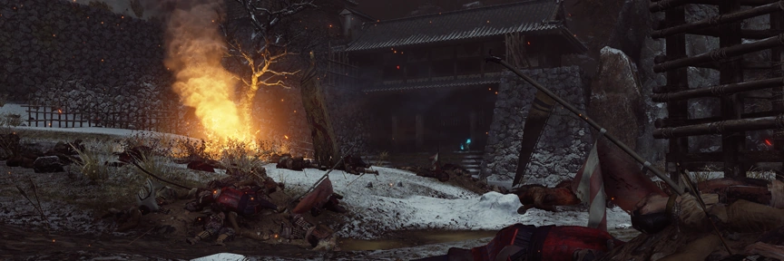
HACIENDA HIRATA (PURIFICACIÓN)
La Hacienda Hirata en su versión de Purificación representa una revisión de los acontecimientos que tuvieron lugar durante el recuerdo de la invasión. Aunque conserva gran parte de la arquitectura y los elementos visuales de la hacienda original, esta versión permite descubrir aspectos adicionales relacionados con lo sucedido en aquel momento. Sus caminos, edificios y jardines vuelven a convertirse en el escenario de un conflicto que marcó profundamente el pasado de Sekiro [2][8].
Sekiro descubre la realidad sobre lo que pasó en la Hacienda Hirata. Esta parte del recuerdo ofrece una perspectiva distinta de los acontecimientos anteriores y permite conocer detalles importantes que no se habían revelado durante la primera exploración. La zona presenta nuevos enfrentamientos y desafíos que exigen al jugador aprovechar todo lo aprendido durante la aventura. Por su significado narrativo, constituye uno de los recorridos más relevantes para comprender el pasado del protagonista y las circunstancias que rodearon la protección de Kuro [2][8].
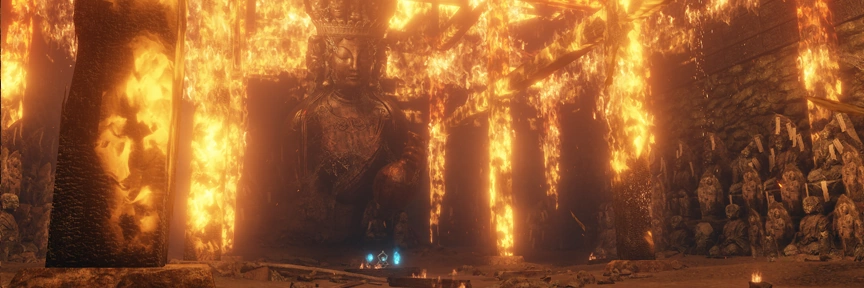